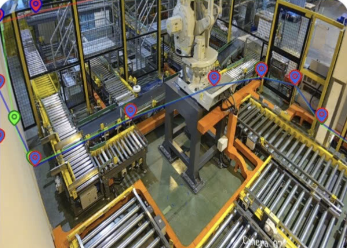

Khách hàng là ưu tiên
Bắt đầu từ nhu cầu thực tế và xây dựng giải pháp cho người sẽ sử dụng kết quả.
Về Primitive AI
Chúng tôi xây dựng AI cho những công việc mà các tổ chức cần hoàn thành mỗi ngày.
Thành lập năm 2023

Câu chuyện của chúng tôi
Kinh nghiệm xây dựng hệ thống cho doanh nghiệp có vốn đầu tư nước ngoài và doanh nghiệp Việt Nam giúp chúng tôi hiểu rõ những vướng mắc trong vận hành.
“AI có thể giúp các tổ chức của chúng ta nâng cao năng suất để bắt kịp như thế nào?”
Công ty ra đời để chuyển kinh nghiệm ứng dụng AI thành những giải pháp hữu ích cho các tổ chức.
Những dự án thị giác máy tính đầu tiên đưa AI vào môi trường sản xuất, giúp đội ngũ quan sát hoạt động trên dây chuyền.

Khi đưa mô hình ngôn ngữ vào hỗ trợ khách hàng, chúng tôi tập trung vào chất lượng phản hồi để đội ngũ nhận được câu trả lời hữu ích, nhất quán và đáng tin cậy.
Qua KnowledgeHub, đội ngũ tìm hiểu cách AI ghi nhớ và sử dụng thông tin liên quan của tổ chức khi thực hiện công việc.
Các dự án kết nối mô hình và phần mềm với quy trình, dữ liệu và những giới hạn cụ thể của từng tổ chức.
Các sản phẩm riêng mở rộng công việc của đội ngũ sang rà soát tài liệu, lưu giữ tri thức gia đình và đánh giá năng lực tiếng Anh.
Nền tảng kết hợp tri thức, tác nhân, công cụ và các bước kiểm tra để tổ chức cấu hình AI theo công việc của mình.
Cách chúng tôi làm việc
Bắt đầu từ nhu cầu thực tế và xây dựng giải pháp cho người sẽ sử dụng kết quả.
Làm kỹ từng phần, từ sản phẩm và kỹ thuật đến cách phối hợp với đội ngũ.
Thử cách tiếp cận mới khi nó có thể cải thiện kết quả công việc.
Đặt giới hạn rõ ràng, kiểm tra các quyết định quan trọng và tôn trọng những người chịu ảnh hưởng.